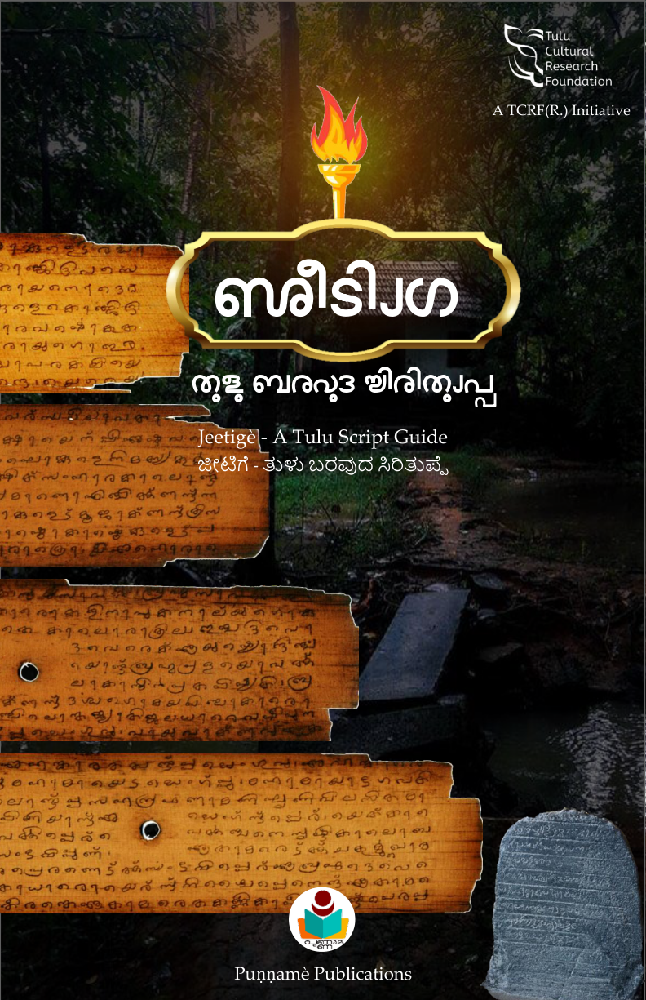

LANGUAGE · CULTURE · HERITAGE
A little light.
A living language.
Jeetigè ಜೀಟಿಗೆ
Discover the beauty of the Tulu script.
Settle in, turn a page, and let the learning begin.
JEETIGÈ PUNNAME

01 / A TCRF(R.) INITIATIVE
Jeetigè / A Tulu Script Guide
Preparing your reading room…
Front cover0%
Drag a corner to turn the page · Use ← → to explore · Take your time.